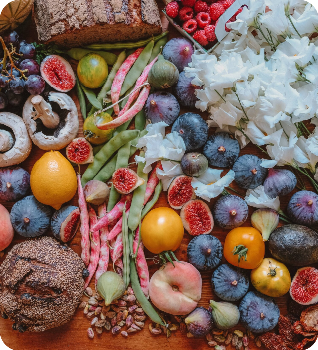

With Tasty Point, you can help fight food waste. We
have different environments according to the segment
to which it belongs with innovative solutions such
as VR food menus.
For Consumers
Do you want to help reduce food waste in Peru
and, in the same way, save money when buying in
restaurants? Then dare to try this application:
For Business
Do you want to increase your income by reducing
product losses? Do you want to be able to
control your waste efficiently? We recommend you
try our application:

Let's help in this important fight
Did you know that, according to the UN, during the
year 2019, 17% of the total food available ended up
in the garbage cans of homes, retailers, restaurants
and other food services. This strong figure shows us
how important it is to combat this problem.
We offer an effective solution for this problem
We offer specialized solutions for each sector,
whether you sell food products or if you are the one
who consumes them. We provide a series of
easy-to-use tools to help you help the planet.
Mission
We are a technology company committed to creating
efficient and innovative web and mobile applications
that allow our users to access a wide range of options
in the food area in an agile, sustainable and economical
way.
Vision
Promote a culture of responsible and effective
consumption, where all our affiliated clients can access
nutritious, delicious and affordable food. Likewise,
contribute to the development of prepared food
businesses in Peru, transforming what would be a loss
due to waste into profits.
About us
Tasty Point is a web application focused on online
delivery, with quick access and easy navigation for its
users, Tasty Point promises to reduce the percentage of
food wasted. For this, our Web APP brings together
different restaurants or food chains to take advantage
of their dishes or products that were not consumed, but
are in good condition for consumption. With the help of
Tasty Point, finding dishes according to the user's
preference at a good price is simple and cheap.